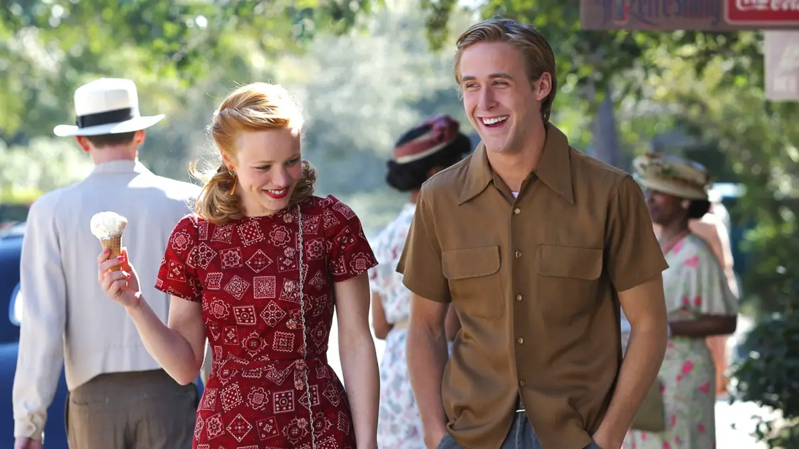

The Notebook
2004 - Drama, Liebesfilm

Duke liest einer Mitbewohnerin im Pflegeheim täglich aus einem alten Notizbuch vor. Die Geschichte handelt von Noah und Allie – einer hinreissenden Sommerliebe im North Carolina der 1940er-Jahre, die durch Standesunterschiede getrennt wird.
- Regie: Nick Cassavetes
- Besetzung: Ryan Gosling, Rachel McAdams, James Garner
- Bewertung: 7,8 / 10 (683.9K Stimmen)
- Laufzeit: 123 min
- FSK: 0